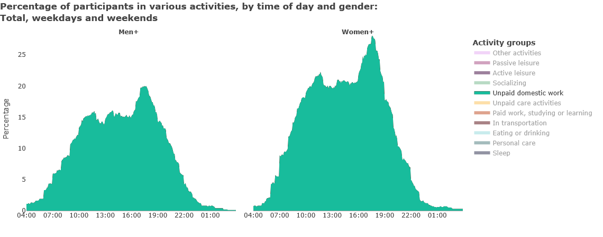
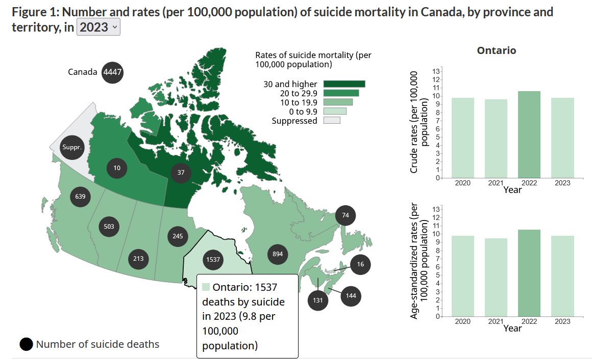

\[ \definecolor{mathBlack}{RGB}{0,0,0} \definecolor{mathOrange}{RGB}{253, 126, 20} \definecolor{mathLightGreen}{RGB}{32, 201, 151} \definecolor{mathGreen}{RGB}{24, 188, 156} \definecolor{mathYellow}{RGB}{253, 156, 18} \definecolor{mathBlue}{RGB}{52, 152, 219} \definecolor{mathRed}{RGB}{231, 76, 60} \definecolor{mathPurple}{RGB}{111, 66, 193} \]
Descriptive Statistics
Agenda
- Frequency Distributions
- Central Tendency
- Variability
Readings
- Being a Statistician Means Never Having to Say You’re Certain
Frequency Distributions
- FREQUENCY DISTRIBUTION
- RELATIVE FREQUENCY DISTRIBUTION
- PROPORTION
- PERCENTAGE
- CUMULATIVE
- RATE
- BAR GRAPH
- HISTOGRAM
- LINE GRAPH
- STATISTICAL MAP
Objectives
- Calculate proportions and percentages
- Construct and analyze frequency, percentage, and cumulative distributions

DISTRIBUTION
Shows all the possible values (or intervals) of the data and how often they occur.
FREQUENCY DISTRIBUTION
A table reporting the number of observations falling into each category of the variable.
Table 1. Attitudes about sex before marriage
premarsx | n |
|---|---|
always wrong | 357 |
almost always wrong | 122 |
wrong only sometimes | 258 |
not wrong at all | 1,378 |
Total | 2,115 |
Survey question: There’s been a lot of discussion about the way morals and attitudes about sex are changing in this country. If a man and woman have sex relations before marriage, do you think it is _________.
Table 1. Attitudes about sex before marriage
premarsx | n |
|---|---|
always wrong | 357 |
almost always wrong | 122 |
wrong only sometimes | 258 |
not wrong at all | 1,378 |
Total | 2,115 |
The number of respondents who answered this survey question.
Table 1. Attitudes about sex before marriage
premarsx | n |
|---|---|
always wrong | 357 |
almost always wrong | 122 |
wrong only sometimes | 258 |
not wrong at all | 1,378 |
Total | 2,115 |
The number of respondents who said pre-marital sex was “wrong only sometimes.”
Are women more likely than men to say premarital sex is “not wrong at all”?
Table 2. Attitudes about sex before marriage by gender
premarsx | male | female |
|---|---|---|
always wrong | 4,159 | 7,116 |
almost always wrong | 1,499 | 2,388 |
wrong only sometimes | 3,904 | 4,792 |
not wrong at all | 10,672 | 11,086 |
Total | 20,234 | 25,382 |
RELATIVE FREQUENCY DISTRIBUTION
A table showing the proportion or percentage for each value of a variable.
Proportions are between 0 and 1.0.
Proportion = count (f) / total number of cases (N).
Percentages are between 0 and 100.
Percentage = proportion × 100.
Table 2. Attitudes about sex before marriage by gender
Men | Women | |||
|---|---|---|---|---|
premarsx | n | % | n | % |
always wrong | 4,159 | 21 | 7,116 | 28 |
almost always wrong | 1,499 | 7 | 2,388 | 9 |
wrong only sometimes | 3,904 | 19 | 4,792 | 19 |
not wrong at all | 10,672 | 53 | 11,086 | 44 |
Total | 20,234 | 100 | 25,382 | 100 |
\(\frac{\color{mathGreen}{11{,}086}}{\color{mathOrange}{25{,}382}} = 0.4367 \times 100 = \color{mathRed}{43.7\%}\)
TIP: Total of a % column should always sum to 100!
Table 2. Attitudes about sex before marriage by gender
Men | Women | |||
|---|---|---|---|---|
premarsx | n | % | n | % |
always wrong | 4,159 | 21 | 7,116 | 28 |
almost always wrong | 1,499 | 7 | 2,388 | 9 |
wrong only sometimes | 3,904 | 19 | 4,792 | 19 |
not wrong at all | 10,672 | 53 | 11,086 | 44 |
Total | 20,234 | 100 | 25,382 | 100 |
A greater proportion of men (53%) than women (44%) say premarital sex is “not wrong at all.”
CUMULATIVE FREQUENCY DISTRIBUTION
The number or percentage of observations at or below a given category.
Table 3. Attitudes about sex before marriage, with cumulative percentages
premarsx | n | % | cumulative % |
|---|---|---|---|
always wrong | 357 | 17 | 17 |
almost always wrong | 122 | 6 | 23 |
wrong only sometimes | 258 | 12 | 35 |
not wrong at all | 1,378 | 65 | 100 |
Total | 2,115 | 100 | 175 |
\({\color{mathGreen} 17} + {\color{mathOrange} 6} = {\color{mathRed} 23\%}\)
RATES
\(\frac{Actual\;occurrences}{possible\;occurrences}\)
Examples:
- Canada’s divorce rate decreased from 12.7 per 1,000 in 1991 to 5.6 per 1,000 in 2020.
- The 2021 suicide rate of 14.8 per 100,000 population for middle aged Canadians (30-59 years old) was the highest of any age group.
- Canada’s total fertility rate reached a new low in 2023 of 1.26 children per woman.
Nominal variables:
can have frequency distributions, cannot have cumulative frequency distributions
Ordinal:
can have frequency distributions and cumulative frequency distributions
Interval-ratio:
can have frequency distributions, cumulative frequency distributions, and rates
A bar graph is used:
for nominal or ordinal variables,
to show frequencies or percentages,
using separated rectangles, with height proportional
to the frequency or percentage.

A histogram is used:
for interval-ratio variables,
to show frequencies or percentages,
using separated rectangles, with height proportional
to the frequency or percentage.

A line graph is used:
for interval-ratio variables,
to show frequencies or percentages,
joining by category the frequency or average with a line.

A statistical map is used:
for interval-ratio variables,
to show geographical variations, often in ratios,
using variation in color or hue.
